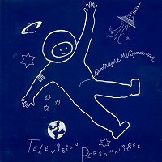

Television Personalities |
 1993 - Fire - BLAZE65/CD - 7"/CD Songs: Goodnight Mr. Spaceman If I Was Your Girl Friend She Loves It When He Sings Like Elvis (CD only) Goodnight Mr. Spaceman Lost In Space Mix (CD only) Performed by Daniel, Jowe Head, Jefferey Bloom, Terri Terrel
Produced by Phil Vinall (track 1) and Television Personalities (tracks
2-4) Special thanks to Barry D. Sleeve by Alison Whiters & Daniel. |